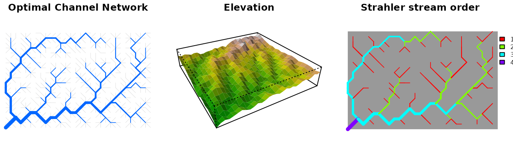
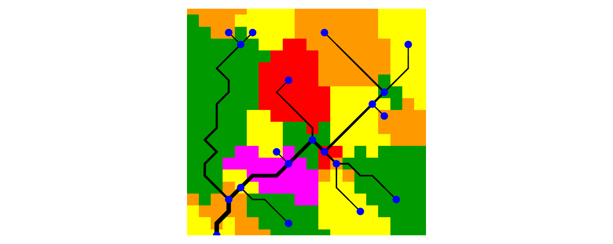
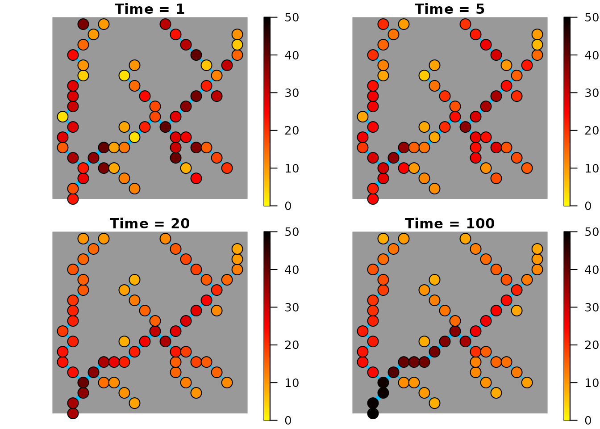
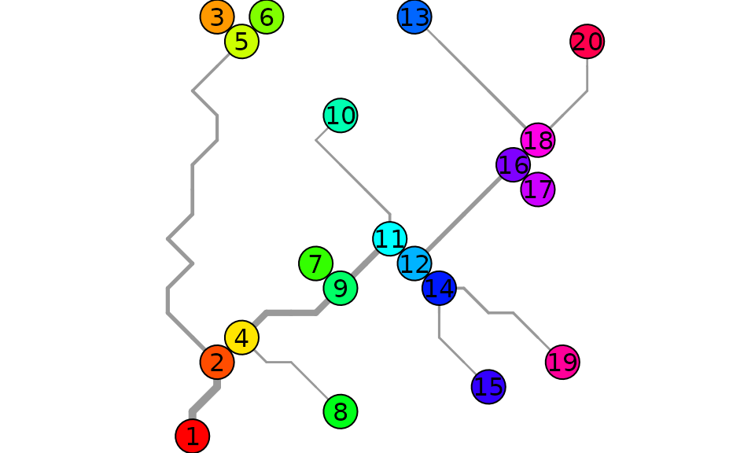

An introduction to OCNet
Luca Carraro, Florian Altermatt, Emanuel A. Fronhofer, Reinhard Furrer, Isabelle Gounand, Andrea Rinaldo, Enrico Bertuzzo
November 06, 2019
OCNet.Rmd#> Warning in rgl.init(initValue, onlyNULL): RGL: unable to open X11 display
#> Warning: 'rgl.init' failed, running with 'rgl.useNULL = TRUE'.Graphical abstract
set.seed(1)
OCN <- create_OCN(30, 20, outletPos = 1)
OCN <- aggregate_OCN(landscape_OCN(OCN), thrA = 3)
par(mfrow = c(1, 3), mai = c(0, 0, 0.2, 0.2))
draw_simple_OCN(OCN, thrADraw = 3)
title("Optimal Channel Network")
draw_elev3D_OCN(OCN, drawRiver = FALSE, addColorbar = FALSE, expand = 0.2, theta = -30)
title("Elevation")
draw_thematic_OCN(OCN$AG$streamOrder, OCN, discreteLevels = TRUE, colPalette = rainbow(4))
title("Strahler stream order")
Overview
OCNet enables the creation and analysis of Optimal Channel Networks (OCNs). These are oriented spanning trees (built on rectangular lattices made up of square pixels) that reproduce all scaling features characteristic of real, natural river networks (Rodriguez-Iturbe et al. 1992; Rinaldo et al. 2014). As such, they can be used in a variety of numerical and laboratory experiments in the fields of hydrology, ecology and epidemiology. Notable examples include studies on metapopulations and metacommunities (e.g. Carrara et al. 2012), scenarios of waterborne pathogen invasions (e.g. Gatto et al. 2013) and biogeochemichal processes in streams (e.g. Helton, Hall, and Bertuzzo 2018).
OCNs are obtained by minimization of a functional which represents total energy dissipated by water flowing through the network spanning the lattice. Such a formulation embeds the evidence that morphological and hydrological characteristics of rivers (in particular, water discharge and slope) follow a power-law scaling with drainage area. For an overview of the functionalities of the package, see Carraro et al. (2020). For details on the theoretical foundation of the OCN concept, see Rinaldo et al. (2014).
Some useful definitions
In graph theory, an oriented spanning tree is a subgraph of a graph \(G\) such that:
- it is oriented: edges’ directions are assigned and none of its pairs of nodes is linked by two symmetric edges;
- it is spanning: it contains all nodes of \(G\);
- it is a tree: it is weakly connected (there exists a path between any pair of nodes, if edges’ directions are neglected) and acyclic (no loops are present).
At the simplest aggregation level (flow direction - FD; see Section @ref(sec:agg) below), OCNs are oriented spanning trees whose nodes are the pixels consituting the lattice and whose edges represent flow directions.
Moreover, OCNs, just like real rivers, are constituted of nodes whose indegree (i.e. the number of edges pointing towards a node) can assume any value while the outdegree (number of edges exiting from the node) is equal to 1, except for the root (or outlet node), whose outdegree is equal to 0. Nodes with null indegree are termed sources. Nodes with indegree larger than 1 are confluences.
OCNet also allows building multiple networks within a single lattice. Each of these networks is defined by its respective outlet, which represents the root of a subgraph; the union of all subgraphs contains all elements of \(G\). For simplicity, we will still refer to “OCNs” with regards to these multiple-outlet entities. In this case, strictly speaking, OCNs are not trees but rather forests.
An OCN is defined by an adjacency matrix \(\mathbf{W}\) with entries \(w_{ij}\) equal to 1 if node \(i\) drains into \(j\) and null otherwise. Owing to the previously described properties, all rows of \(\mathbf{W}\) have a single non-zero entry, except those identifying the outlet nodes, whose entries are all null. Each adjacency matrix uniquely defines a vector of contributing areas (or drainage areas) \(\mathbf{A}\), whose components \(A_i\) are equal to the number of nodes upstream of node \(i\) plus the node itself. Mathematically, this can be expressed as \((\mathbf{I}-\mathbf{W}^T)\mathbf{A}=\mathbf{1}\), where \(\mathbf{I}\) is the identity matrix and \(\mathbf{1}\) a vector of ones.
OCNet functions dependency tree
The generation of an OCN is performed by function
create_OCN. Its only required inputs are the dimensions of
the rectangular lattice, but several other features can be implemented
via its optional inputs (see the function documentation for details).
The output of create_OCN is a list, which can be used as
input to the subsequent function landscape_OCN, as shown by
the dependency tree below (indentation of an item implies dependency on
the function at the above level).
-
create_OCN: performs the OCN search algorithm-
landscape_OCN: calculates the elevation field generated by the OCN-
aggregate_OCN: aggregates the OCN at various levels-
draw_thematic_OCN: draws OCN with colors of nodes depending on a theme -
draw_subcatchments_OCN: draws partition of the lattice into subcatchments as a result of the aggregation process of the OCN -
paths_OCN: calculates paths and path lengths among OCN nodes -
rivergeometry_OCN: evaluates hydraulic properties of the OCN -
OCN_to_igraph: transforms the OCN into an igraph object -
OCN_to_SSN: transforms the OCN into a SpatialStreamNetwork object
-
-
draw_contour_OCN: draws “real-shaped”1 OCNs and catchment contours -
draw_elev2D_OCN: draws 2D elevation field -
draw_elev3D_OCN: draws 3D elevation field -
draw_elev3Drgl_OCN: draws 3D elevation field (viarglrendering system) -
find_area_threshold_OCN: finds relationship between threshold area and number of nodes at the RN and AG level (see Figure @ref(fig:ex-net) for relevant definitions)
-
-
draw_simple_OCN: fast drawing of OCNs
-
-
create_peano: creates Peano networks
OCNet functions are intended to be applied in sequential order: for each non-drawing function, the input list is copied into the output list, to which new sublists and objects are added.
Aggregation levels
Adjacency matrices and contributing area vectors of an OCN can be defined at different aggregation levels. In the output of OCNet functions, variables characterizing the OCN at the different aggregation levels are grouped within separate sublists, each of them identified by a two-letter acronym (marked in bold in the list below). Figure @ref(fig:ex-net) provides a graphical visualization of the correspondence among the main aggregation levels.
- Nearest neighbours (N4, N8). Every pixel of the lattice constitutes a node of the network. Each node is connected to its four (pixels that share an edge) or eight (pixels that share an edge or a vertex) nearest neighbours. At this level, \(\mathbf{W}\) is defined but \(\mathbf{A}\) is not. Note that this level does not describe flow connectivity, but rather proximity among pixels. Hence, \(\mathbf{W}\) does not describe an oriented spanning tree.
-
Flow direction (FD). At this level, every
pixel of the lattice is a node, but connectivity follows the flow
directions that have been found by the OCN search algorithm (operated by
function
create_OCN). Edges’ lengths are equal to eithercellsize(the size of a pixel side, optional input increate_OCN) orcellsize*sqrt(2), depending on whether flow direction is horizontal/vertical or diagonal. -
River network (RN). The set of nodes at
this level is a subset of the nodes at the FD level, such that their
contributing area is larger than a certain threshold (optional input
A_thrinaggregate_OCN). Such a procedure is customary in the hydrological problem of extracting a river network based on digital elevation models of the terrain (O’Callaghan and Mark 1984), and corresponds to the geomorphological concept of erosion threshold (associated to a threshold in landscape-forming runoff, of which drainage area represents a proxy Rodriguez-Iturbe and Rinaldo 2001). Edges’ lengths are again equal to eithercellsizeorcellsize*sqrt(2). -
Aggregated (or reach - AG). The
set of nodes at this level is a subset of the nodes at the RN level (see
details in the next section). Accordingly, vector \(\mathbf{A}\) is a subset of the vector of
the same name defined at the RN level. Edges can span several pixels and
therefore have various lengths.
- Subcatchment (SC). The number of nodes at this level is generally2 equal to that at the AG level. Each node is constituted by the cluster of pixels that directly drain into the edge departing from the corresponding node at the AG level. Here \(\mathbf{W}\) does not represent flow connectivity but rather identifies terrestrial borders among subcatchments and is therefore symmetric.
- Catchment (CM). In this level, the number of nodes is equal to the number of outlets. Every node represents the portion of the lattice drained by its relative outlet. \(\mathbf{A}\) stores drainage area values for each of these catchments, while \(\mathbf{W}\) identifies terrestrial borders among catchments.
![Representation of the different aggregation levels at which the network is defined (excluding the null levels N4 and N8). The example is obtained from a single-outlet 8x8 lattice. Letter 'O' identifies the outlet pixel. Arrows on the other pixels identify flow directions. Numbers represent the cumulative drainage area (in number of pixels). At the FD level, all 64 pixels belong to the network^[Note that this pattern of flow directions was not derived by an OCN search algortihm, but rather drawn manually for illustration purposes.]. To obtain the RN level, a threshold value of 5 on drainage area is applied to distinguish pixels belonging to the river network. The network at the AG level consists of 9 nodes. The SC level is obtained by splitting the lattice into portions whose pixels drain into the AG nodes and edges. In this example, because there is only one outlet, all pixels belong to a single node at the CM level.](example_networks.png)
Representation of the different aggregation levels at which the network is defined (excluding the null levels N4 and N8). The example is obtained from a single-outlet 8x8 lattice. Letter ‘O’ identifies the outlet pixel. Arrows on the other pixels identify flow directions. Numbers represent the cumulative drainage area (in number of pixels). At the FD level, all 64 pixels belong to the network3. To obtain the RN level, a threshold value of 5 on drainage area is applied to distinguish pixels belonging to the river network. The network at the AG level consists of 9 nodes. The SC level is obtained by splitting the lattice into portions whose pixels drain into the AG nodes and edges. In this example, because there is only one outlet, all pixels belong to a single node at the CM level.
Relationship between nodes at the RN and AG levels
Nodes at the AG level correspond to a subset of nodes at the RN level. In particular, nodes at the AG level belong to at least one of these four categories:
- Sources: nodes at the RN level with null indegree.
- Confluences: nodes at the RN level with indegree larger than one.
- Outlets: corresponding to outlets at the RN level.
-
Breaking nodes (only if
maxReachLengthis finite): nodes that split edges that are longer thanmaxReachLength.
Outlet nodes at the AG level might also be sources, confluences or breaking nodes. All AG nodes except outlet nodes have outdegree equal to 1. All RN nodes that do not correspond to AG nodes constitute the edges of the network at the AG level: more specifically, each edge is formed by an AG node and a sequence of RN nodes downstream of the AG node, until another AG node is found.
Figure @ref(fig:ex3-net) shows an alternative aggregation scheme for
the network showed in Figure @ref(fig:ex-net) when the optional input
maxReachLength is set to a finite value.
Aggregation of the previous network with A_thr equal to 5
pixels and maxReachLength equal to 3 pixel sides. Note that
the length of the diagonal segments of the edges is equal to
sqrt(2).
Correspondence between indices at different levels
The output of aggregate_OCN contains objects named
OCN$XX$toYY, where XX and YY are
two different aggregation levels. These objects define the
correspondences between indices among aggregation levels.
OCN$XX$toYY contains a number of elements equal to the
number of nodes at XX level; each element
OCN$XX$toYY[[i]] contains the index/indices at
YY level corresponding to node i at
XX level. For aggregation level AG, additional
correspondence objects are marked by the string Reach:
these consider the whole sequence of RN nodes constituting the edge
departing from an AG node as belonging to the AG node.
The example shown in Figure @ref(fig:ex-ind) corresponds to the
dataset OCN_4 included in the package. Note that index
numbering starts from the lower-left (southwestern) corner of the
lattice.
Top-left panel: arrows display flow directions, numbers identify contributing areas. Bottom-left panel: the network is aggregated by imposing a threshold equal to 2 pixels. The other panels display indices of nodes at the different aggregation levels.
The R code below displays the different OCN$XX$toYY
objects corresponding to the example in Figure @ref(fig:ex-ind):
ex <- aggregate_OCN(landscape_OCN(OCN_4), thrA = 2)
ex$FD$toRN
#> [1] 1 2 3 0 4 0 0 5 6 7 0 0 0 0 8 0
ex$FD$toSC
#> [1] 1 3 3 3 2 3 3 3 4 5 5 3 4 5 5 5
ex$RN$toFD
#> [1] 1 2 3 5 8 9 10 15
ex$RN$toAG
#> [1] 1 0 0 2 3 4 0 5
ex$RN$toAGReach
#> [1] 1 3 3 2 3 4 5 5
ex$AG$toFD
#> [1] 1 5 8 9 15
ex$AG$ReachToFD
#> [[1]]
#> [1] 1
#>
#> [[2]]
#> [1] 5
#>
#> [[3]]
#> [1] 2 3 8
#>
#> [[4]]
#> [1] 9
#>
#> [[5]]
#> [1] 10 15
ex$AG$toRN
#> [1] 1 4 5 6 8
ex$AG$ReachToRN
#> [[1]]
#> [1] 1
#>
#> [[2]]
#> [1] 4
#>
#> [[3]]
#> [1] 2 3 5
#>
#> [[4]]
#> [1] 6
#>
#> [[5]]
#> [1] 7 8
ex$SC$toFD
#> [[1]]
#> [1] 1
#>
#> [[2]]
#> [1] 5
#>
#> [[3]]
#> [1] 2 3 8 4 6 7 12
#>
#> [[4]]
#> [1] 9 13
#>
#> [[5]]
#> [1] 10 15 11 14 16A working example
Let’s build an OCN on a 20x20 lattice and assume that each cell
represents a square of side 500 m. The total size of the catchment is
therefore 100 km2. Let’s locate the outlet close to the
southwestern corner of the lattice. Function
draw_simple_OCN can then be used to display the OCN.
set.seed(1)
OCNwe <- create_OCN(20, 20, outletPos = 3, cellsize = 500)
par(mai=c(0,0,0,0))
draw_simple_OCN(OCNwe)Now, let’s construct the elevation field subsumed by the OCN. Let’s
suppose that the outlet has null elevation and slope equal to 0.01.
Then, we use draw_elev3D_OCN to draw the three-dimensional
elevation map (values are in m).
OCNwe <- landscape_OCN(OCNwe, slope0 = 0.01)
par(mai=c(0,0,0,0.5))
draw_elev3D_OCN(OCNwe, drawRiver = FALSE)Next, the OCN can be aggregated. Let’s suppose that the desired
number of nodes at the AG level be as close as possible4 to 20. With function
find_area_threshold_OCN we can derive the corresponding
value of drainage area threshold:
thr <- find_area_threshold_OCN(OCNwe)
# find index corresponding to thr$Nnodes ~= 20
indThr <- which(abs(thr$nNodesAG - 20) == min(abs(thr$nNodesAG - 20)))
indThr <- max(indThr) # pick the last ind_thr that satisfies the condition above
thrA20 <- thr$thrValues[indThr] # corresponding threshold areaThe resulting number of nodes is5 20, corresponding to a threshold area
thrA20 = 2.5 km2. The latter value can now be
used in function aggregate_OCN to obtain the aggregated
network. Function draw_subcatchments_OCN shows how the
lattice is partitioned into subcatchments. It is possible to add points
at the locations of the nodes at the AG level.
OCNwe <- aggregate_OCN(OCNwe, thrA = thrA20)
par(mai=c(0.1,0,0.1,0))
draw_subcatchments_OCN(OCNwe)
points(OCNwe$AG$X,OCNwe$AG$Y, pch = 21, col = "blue", bg = "blue")
Finally, draw_thematic_OCN can be used to display the
along-stream distances of RN-level nodes to the outlet (in m), as
calculated by paths_OCN.
OCNwe <- paths_OCN(OCNwe, includePaths = TRUE)
par(mai=c(0.1,0,0.1,0))
draw_thematic_OCN(OCNwe$RN$downstreamPathLength[ , OCNwe$RN$outlet], OCNwe,
backgroundColor = "#606060")Application: metapopulation model
Theory
Let’s build a simple discrete-time, deterministic metapopulation model on the previously built OCN. In particular, let’s assume that:
- The expected population growth at node \(i\) follows the Beverton-Holt model, with proliferation rate \(r\) and carrying capacity \(K_i\).
- At each timestep, the number of individuals moving from node \(i\) is expressed as \(G(P_i(t),K_i)\), where \(P_i(t)\) is the (expected) population size at node \(i\) and time \(t\).
- \(G(P_i(t),K_i)=G(K_i,K_i)\cdot P_i(t)/K_i\), namely the number of individuals moving from node \(i\) increases linearly with \(P_i(t)\).
- At each timestep, individuals at node \(i\) can only move to a node that is directly connected to \(i\), either downstream or upstream.
- \(p_d\) and \(p_u = 1 - p_d\) identify the probability to move downstream or upstream, respectively. For a headwater node \(i\), due to the lack of an upstream connection, the actual (expected) number of individuals moving out of \(i\) at time \(t\) is \(p_d G(P_i(t),K_i)\). Vice versa, the (expected) number of individuals moving out of the outlet \(o\) at time \(t\) is \(p_u G(P_o(t),K_o)\).
- If the indegree of a node is larger than one, individuals moving upstream are split among the possible destination nodes into fractions \(Y\) proportional to their drainage areas.
Therefore, the model equation is: \[ \begin{split} P_i(t+1) &= \frac{r P_i(t)}{1+ (r-1)P_i(t)/K_i} - (p_d D_i + p_u U_i)G(K_i,K_i)\frac{P_i(t)}{K_i} \\ &\quad + p_d \left( \sum_{j=1} w_{ji} G(K_j,K_j)\frac{P_j(t)}{K_j}\right) + p_u \left( \sum_{j=1} w_{ij} Y_i G(K_j,K_j)\frac{P_j(t)}{K_j}\right) \end{split} \] where \(D_i\) (\(U_i\)) is equal to one if there is a downstream (upstream) connection available from node \(i\) and is null otherwise. Weights \(Y_i\) are defined as: \[ Y_i = \frac{A_i}{\sum_{k=1} w_{kj}A_k}, \] where \(j\) identifies the node downstream of \(i\). Moreover, it is \(Y_o = 1\).
At carrying capacity, the system is at equilibrium, which implies that the (expected) number of individuals moving from a node \(i\) to its downstream connection \(j\) is equal to the (expected) number of individuals moving from \(j\) to \(i\): \[ p_d G(K_i,K_i) = p_u Y_i G(K_j,K_j). \] The iterative application of the above equation allows the calculation of \(G(K_i,K_i)\) for all \(i\) up to a constant. To this end, let’s assume \(G(K_o,K_o) = G_o\). We therefore obtain \[ G(K_i,K_i) = G_o \left(\frac{p_u}{p_d}\right)^{|P_{io}|} \prod_{k \in P_{io}} Y_k, \] where \(P_{io}\) is the set of nodes constituting the downstream path from \(i\) to the outlet \(o\), while \(|P_{io}|\) is its cardinality.
Implementation
For this example, let’s use the previously derived
OCN_we aggregated at the RN level. Let’s assume that
carrying capacity is proportional to the river width evaluated at the
nodes, while the initial population distribution is randomly
assigned.
## Input data
OCNwe <- rivergeometry_OCN(OCNwe, widthMax = 5) # evaluate river width
K <- 10*OCNwe$RN$width # calculate carrying capacity
pop0 <- 2*mean(K)*runif(OCNwe$RN$nNodes) # initial random population vector
nTimestep <- 100 # number of timesteps
r <- 1.05 # proliferation rate
pd <- 0.5 # probability to move downstream
pu <- 1 - pd # probability to move upstream
Go <- 5 # parameter controlling mobility
# (no. individuals exiting from outlet node at carrying capacity is pu*Go) We can now compute weights \(Y\):
## Weights for upstream movement
Y <- rep(1,OCNwe$RN$nNodes)
for (i in 1:OCNwe$RN$nNodes){
if (i != OCNwe$RN$outlet){
Y[i] <- OCNwe$RN$A[i]/(OCNwe$RN$W[ , OCNwe$RN$downNode[i]] %*% OCNwe$RN$A)
}
}and \(G(K_i,K_i)\):
## Evaluate expected number of individuals moving at carrying capacity
GKK <- rep(0, OCNwe$RN$nNodes)
for (i in (1:OCNwe$RN$nNodes)){
path <- OCNwe$RN$downstreamPath[[i]][[OCNwe$RN$outlet]] # select path
prod <- Go # initialize product of Y
for (j in path){
prod <- prod*Y[j]
}
GKK[i] <- (pu/pd)^(length(path))*prod
}We can now run the metapopulation model:
## Run metapopulation model
pop <- matrix(data=0,ncol=nTimestep,nrow=OCNwe$RN$nNodes) # metapopulation matrix
pop[,1] <- pop0 # initialization
for (t in 2:nTimestep){
for (i in 1:OCNwe$RN$nNodes){
pop[i, t] <-
# Beverton-Holt growth model
r*pop[i, t-1]/(1 + pop[i, t-1]*(r-1)/K[i]) +
# individuals exiting from node i
- (pu*(sum(OCNwe$RN$W[ , i])>0) + pd*(sum(OCNwe$RN$W[i, ])>0)) *
GKK[i] * (pop[i,t-1]/K[i]) +
# individuals entering in i from the upstream nodes
+ pd * OCNwe$RN$W[ , i] %*% (GKK*pop[ , t-1]/K) +
# individuals entering in i from the downstream node
+ pu * Y[i] * OCNwe$RN$W[i, ] %*% (GKK*pop[ , t-1]/K)
}
}The left panel of the graph below shows the time evolution of the local population at the outlet (red) and at the node at highest distance from the outlet (blue). In the right panel, the evolution total metapopulation size is shown. Dashed lines indicate population values at carrying capacity.
par(mfrow = c(1, 2))
plot(pop[OCNwe$RN$outlet, ], type = "l", ylim = c(0, 1.05*K[OCNwe$RN$outlet]), col = "red",
xlab = "Time", ylab = "Population", lwd = 2)
title("Evolution of local pop. size")
lines(c(1, nTimestep),c(K[OCNwe$RN$outlet], K[OCNwe$RN$outlet]), col = "red", lty = 2)
farthestNode <- which(OCNwe$RN$downstreamPathLength[ , OCNwe$RN$outlet]
== max(OCNwe$RN$downstreamPathLength[ , OCNwe$RN$outlet]))[1]
lines(pop[farthestNode, ], type="l", col="blue",lwd=2)
lines(c(1, nTimestep), c(K[farthestNode], K[farthestNode]), col = "blue", lty = 2)
plot(colSums(pop), type = "l", xlab = "Time", ylab = "Population", lwd = 2, ylim = c(0, 1.05*sum(K)))
lines(c(1, nTimestep), c(sum(K),sum(K)), lty = 2)
title("Evolution of metapop. size")Function draw_thematic_OCN can be used to visualize the
spatial distribution of the metapopulation at given time points.
par(mfrow = c(2, 2), mai = c(0.1, 0, 0.2, 0))
draw_thematic_OCN(pop[,1], OCNwe, colLevels = c(0, max(K), 1000),
drawNodes = TRUE)
title("Time = 1")
draw_thematic_OCN(pop[,5], OCNwe, colLevels = c(0, max(K), 1000),
drawNodes = TRUE)
title("Time = 5")
draw_thematic_OCN(pop[,20], OCNwe, colLevels = c(0, max(K), 1000),
drawNodes = TRUE)
title("Time = 20")
draw_thematic_OCN(pop[,100], OCNwe, colLevels = c(0, max(K), 1000),
drawNodes = TRUE)
title("Time = 100")
Peano networks
Function create_peano can be used in lieu of
create_OCN to generate Peano networks on square lattices.
Peano networks are deterministic, plane-filling fractals whose
topological measures (Horton’s bifurcation and length ratios) are akin
to those of real river networks (Marani, Rigon,
and Rinaldo 1991) and can then be used in a variety of synthetic
experiments, as it is the case for OCNs (e.g.
Campos, Fort, and Méndez 2006). Peano networks are generated by
means of an iterative algorithm: at each iteration, the size of the
lattice side is doubled (see code below). As a result, Peano networks
span squares of side equal to a power of 2. The outlet must be located
at a corner of the square.
par(mfrow = c(2, 3), mai = c(0, 0, 0.2, 0))
peano0 <- create_peano(0)
draw_simple_OCN(peano0)
title("Iteration: 0 - Lattice size: 2x2")
peano1 <- create_peano(1)
draw_simple_OCN(peano1)
title("Iteration: 1 - Lattice size: 4x4")
peano2 <- create_peano(2)
draw_simple_OCN(peano2)
title("Iteration: 2 - Lattice size: 8x8")
peano3 <- create_peano(3)
draw_simple_OCN(peano3)
title("Iteration: 3 - Lattice size: 16x16")
peano4 <- create_peano(4)
draw_simple_OCN(peano4)
title("Iteration: 4 - Lattice size: 32x32")
peano5 <- create_peano(5)
draw_simple_OCN(peano5)
title("Iteration: 5 - Lattice size: 64x64")The output of create_peano is a list containing the same
objects as those produced by create_OCN. As such, it can be
used as input for all other complementary functions of the package.
par(mai = c(0, 0, 0, 0))
peano5 <- landscape_OCN(peano5)
draw_elev2D_OCN(peano5)
List of ready-made OCNs
OCNet contains some ready-made large OCNs built via function
create_OCN. Their features are summarized in the Table
below. Refer to the documentation of create_OCN for the
definition of column names. Note that:
- If not specified otherwise, the position of outlet(s) was derived from default options.
-
Cooling schedule:
-
cold: corresponds to
coolingRate = 10,initialNoCoolingPhase = 0; -
default: corresponds to default values
coolingRate = 1,initialNoCoolingPhase = 0; -
hot: corresponds to
coolingRate = 0.5,initialNoCoolingPhase = 0.1.
-
cold: corresponds to
-
seed is the value of the argument used in the call
of
set.seedprior to executingcreate_OCN. - On CRAN? identifies which OCNs are uploaded in the version of OCNet that can be downloaded from CRAN (owing to limitation in package size). Installation of package from GitHub provides the complete set of OCNs hereafter described6.
| name | dimX | dimY | No. of outlets | Periodic Boundaries | Initial State | Cooling Schedule | Cellsize | seed | On CRAN? |
|---|---|---|---|---|---|---|---|---|---|
OCN_47
|
4 | 4 | 1 | FALSE | 1 | ||||
OCN_20 |
20 | 20 | 1 | FALSE | I | default | 1 | 1 | Yes |
OCN_250 |
250 | 250 | 1 | FALSE | I | default | 1 | 2 | No |
OCN_250_T |
250 | 250 | 1 | FALSE | T | default | 1 | 2 | Yes |
OCN_250_V |
250 | 250 | 1 | FALSE | V | default | 1 | 2 | No |
OCN_250_cold |
250 | 250 | 1 | FALSE | I | cold | 1 | 2 | No |
OCN_250_hot |
250 | 250 | 1 | FALSE | I | hot | 1 | 2 | No |
OCN_250_V_cold |
250 | 250 | 1 | FALSE | V | cold | 1 | 2 | No |
OCN_250_V_hot |
250 | 250 | 1 | FALSE | V | hot | 1 | 2 | No |
OCN_250_PB |
250 | 250 | 1 | TRUE | I | default | 1 | 2 | Yes |
OCN_rect1 |
450 | 150 | 1 | FALSE | I | default | 1 | 3 | No |
OCN_rect2 |
150 | 450 | 1 | FALSE | I | default | 1 | 3 | No |
OCN_300_diag |
300 | 300 | 18 | FALSE | V | default | 50 | 4 | No |
OCN_300_4out |
300 | 300 | 49 | FALSE | V | default | 50 | 5 | Yes |
OCN_300_4out_PB_hot |
300 | 300 | 410 | TRUE | V | hot | 50 | 5 | Yes |
OCN_300_7out |
300 | 300 | 7 | FALSE | V | default | 50 | 5 | No |
OCN_400_T_out |
400 | 400 | 1 | FALSE | T | hot | 50 | 7 | No |
OCN_400_Allout |
400 | 400 | All | FALSE | H | hot | 50 | 8 | Yes |
OCN_500_hot11
|
500 | 500 | 112 | FALSE | I | hot | 50 | 9 | No |
OCN_500_PB_hot |
500 | 500 | 1 | TRUE | V | hot | 50 | 10 | No |
Compatibility with other packages
igraph
Adjacency matrices at all aggregation levels are produced as
spam (Furrer and Sain 2010)
objects. In order to transform the OCN into an igraph (Csardi and Nepusz 2006) graph object, the
adjacency matrix must be converted into a Matrix object
(via function as.dgCMatrix.spam of spam).
Function graph_from_adjacency_matrix of igraph
can then be used to obtain a graph object.
For example, let’s transform the previously obtained
OCN_we at the AG level into a graph:
par(mai=c(0.1,0.1,0.1,0.1))
g <- OCN_to_igraph(OCNwe, level = "AG")
plot.igraph(g, vertex.color = rainbow(OCNwe$AG$nNodes),
layout = matrix(c(OCNwe$AG$X,OCNwe$AG$Y),ncol = 2, nrow = OCNwe$AG$nNodes))The same network can be displayed as an OCN:
par(mai=c(0,0,0,0))
draw_thematic_OCN(c(1:OCNwe$AG$nNodes), OCNwe, discreteLevels = TRUE, drawNodes = TRUE,
colPalette = rainbow, cex = 3, riverColor = "#999999",
backgroundColor = "#00000000", addLegend = FALSE)
text(OCNwe$AG$X, OCNwe$AG$Y)
SSN
Function OCN_to_SSN transforms an OCN at a given
aggregation level into an SSN (Ver Hoef et al.
2014) object. See the following example:
ssnOCN <- OCN_to_SSN(OCNwe, level = "RN", obsDesign = SSN::binomialDesign(50),
path = paste(tempdir(), "/OCN.ssn", sep = ""), importToR = TRUE)
#> Warning: OGR support is provided by the sf and terra packages among others
#> Warning: OGR support is provided by the sf and terra packages among others
#> Warning: OGR support is provided by the sf and terra packages among others
#> Warning: OGR support is provided by the sf and terra packages among others
#> Warning: OGR support is provided by the sf and terra packages among others
#> Warning: OGR support is provided by the sf and terra packages among others
#> Warning: OGR support is provided by the sf and terra packages among others
#> Warning: OGR support is provided by the sf and terra packages among others
#> Warning: OGR support is provided by the sf and terra packages among others
#> Warning: OGR support is provided by the sf and terra packages among others
#> Warning: shapelib support is provided by GDAL through the sf and terra
#> paackages among others
#> Warning: shapelib support is provided by GDAL through the sf and terra
#> paackages among others
#> Warning: OGR support is provided by the sf and terra packages among others
#> Warning: OGR support is provided by the sf and terra packages among others
#> Warning: OGR support is provided by the sf and terra packages among others
#> Warning: OGR support is provided by the sf and terra packages among others
#> Warning: OGR support is provided by the sf and terra packages among others
#> Warning: OGR support is provided by the sf and terra packages among others
#> Warning: shapelib support is provided by GDAL through the sf and terra
#> paackages among others
plot.SpatialStreamNetwork(ssnOCN, "upDist", breaktype = "user", brks = seq(0,14000,2000),
xlab = "x [m]", ylab = "y [m]", asp = 1)
title("Distance from outlet of observation points [m]")